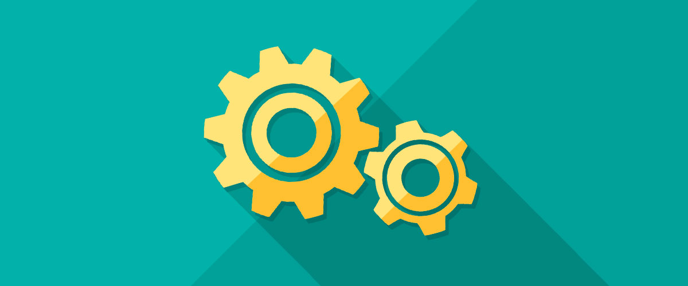

常見問題與處理
在接觸 Webduino 的初期，每個人都會遭遇到大大小小不同的問題，這個頁面裡頭會列出許多常見的問題，以及各種問題對應的解決方法，如果有其他的問題，也可以直接 email 給我們，或是在最下面留言也可以。
初始化設定相關
1. 為什麼要初始化設定？
因為 Webduino 開發板是透過網路連線控制，因此必須要透過初始化設定，讓 Webduino 可以自動連上網路。
2. Webduino 的 SSID 與家裡 wifi 的 SSID 差異？
(1) 通常在初始化設定的時候，很容易把 Webduino 的 SSID 與家裡 wifi 的 SSID 搞混，Webduino 的 SSID 是這塊開發板的名稱。 ( 通常是 wa + 數字，例如 wa101、wa999 )
(2) 當你連結 Webduino 開發板的 SSID，表示我們可以透過「192.168.4.1」連結上 Webduino 開發板，連結上開發板之後，所看到的 SSID 與 PASSWORD，指的就是家裡、公司環境或行動裝置分享的 wifi SSID 與密碼，千萬不要搞錯了。
3. 為什麼在 wifi 搜尋看不到 Webduino 開發板的 SSID？
(1) 可能是沒有接上 LED 燈，所以您必須在腳位 3.3v 與 11 的位置接上 LED 燈 ( 長腳接 3.3v )，若 LED 燈沒有亮起，可改接 1k 歐姆電阻再試一次，可以參考「Webduino 的基本介紹與初始化設定」。
(2) 可能是電池沒電了，建議更換電池或改用 usb 供電。
4. 初始化之後，在 device 的網頁看不到對應的 Webduino 開發板名稱？
(1) 可能是您沒有輸入正確的 wifi SSID 與 PASSWORD。
(2) 可能是 wifi 的 SSID 與 PASSWORD 內含特殊字元或長度太長。 ( 只接受大小寫 14 個字元的英文字母與數字的組合 )
(3) 可能是電池沒電了，建議更換電池或改用 usb 供電。
購買 Webduino 相關
1. 要如何購買 Webduino？
(1) 報名 Webduino 990 元以上的付費課程，隨課程會附贈有基本的開發材料包。
(2) Webduino 課程結束後於現場購買，現場繳費，請先來信通知欲購買之數量與購買人聯絡方式，以便我們準備材料包。
(3) 來信 service@webduino.io 洽詢相關購買事宜。
2. Webduino 教育暨企業合作方案
Webduino 提供教育與企業的合作方案，會包含更豐富的教材與內容，以專題和解決方案的實際課程，提供教師、學生或企業用戶最完整的學習體驗，若您有相關的需求，可直接來信 service@webduino.io 洽詢相關合作方式。
Webduino 服務相關
1. Webduino 的程式碼是否有 Open Source？
Webduino 有全面 Open Source 的規劃，目前分為三個階段執行，第一階段是 Open 網頁前端所有 Source Code 並放到 Github，第二階段將 Open 後端 Server 程式碼，第三階段才是 Arduino上韌體程式的 Open Source。目前是第一階段，第二階段與第三階段尚未開始。
2. 是否可以架設自己的伺服器？
Webduino 的伺服器方案，目前僅提供大量購買、學校或企業使用，若您有架設後端伺服器的需求，請來信 service@webduino.io 洽詢相關合作方式。
3. 範例裡頭沒有我想要的傳感器或元件
(1) 我們正在努力趕工相關傳感器對應的 WebComponent，有最新的消息都會在粉絲團與網站上公告。
(2) 您可以由我們的 Github 閱讀相關傳感器或元件的 Source Code，您也可以自行開發相關傳感器或元件的 WebComponent。